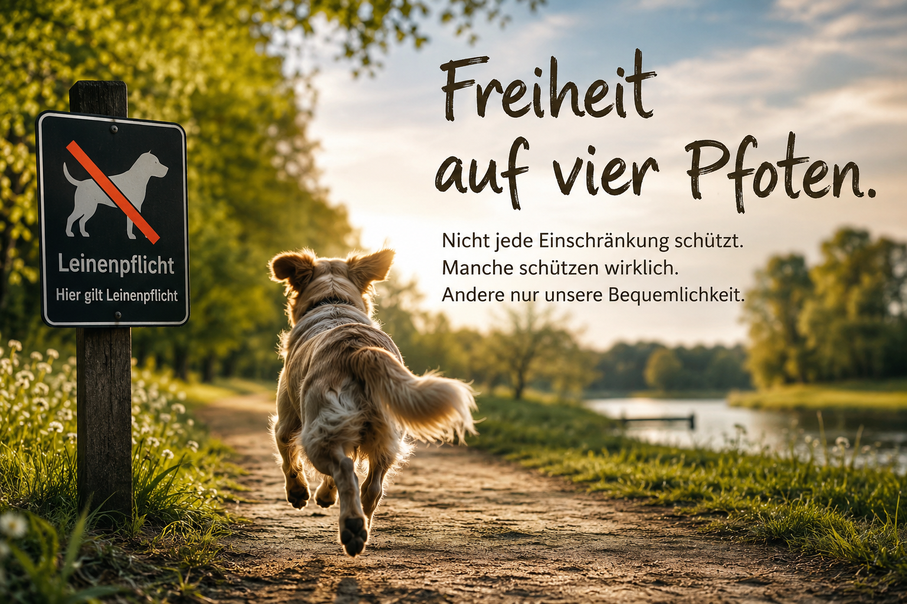
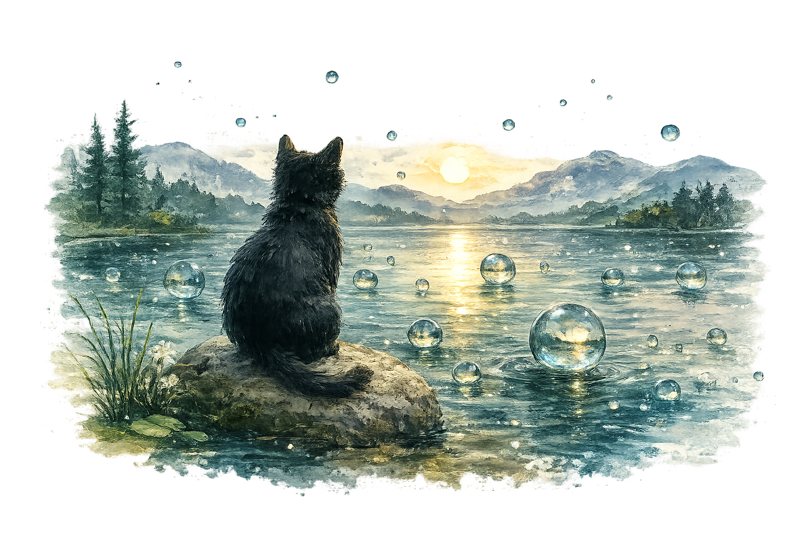

Sein
Freiheit auf vier Pfoten
Welche Einschränkungen schützen wirklich – und welche nur unsere Gewohnheiten?
Light up Reader
Manche Fragen führen nicht zu einer Antwort, sondern zu einer Haltung.

Sein
Welche Einschränkungen schützen wirklich – und welche nur unsere Gewohnheiten?
Wer mit einem Hund lebt, kennt die Situation.
Der Hund möchte laufen. Schnuppern. Entdecken. Er möchte dem Wind folgen, einer Spur nachgehen oder einfach nur ein Stück Freiheit genießen. Gleichzeitig begegnet er einer Welt voller Regeln. Leinenpflicht hier, Hundeverbot dort. Nicht in den Park, nicht an den Badesee, nicht in die Schule, nicht in die Universität, nicht in viele Geschäfte und häufig auch nicht an den Arbeitsplatz.
Natürlich gibt es gute Gründe für manche dieser Regelungen. Während der Brut- und Setzzeit etwa benötigen Wildtiere besonderen Schutz. Ein Hund, der nachweislich Menschen oder Tiere verletzt hat, stellt andere Fragen als ein friedlicher Familienhund. Wo konkrete Schutzinteressen berührt werden, erscheint eine Einschränkung nachvollziehbar.
Doch nicht jede Einschränkung dient dem Schutz.
Manche dienen vor allem der Bequemlichkeit.
Und genau dort beginnt eine interessante Frage.
Warum akzeptieren wir bei Tieren vieles als selbstverständlich, was wir bei Menschen kritisch hinterfragen würden?
Ein Hund wird angeleint, damit er dort bleibt, wo wir ihn haben möchten. Sein Bewegungsradius wird festgelegt. Wir bestimmen, wann er laufen darf, wo er laufen darf und mit wem er Kontakt haben darf. Oft geschieht dies aus Fürsorge. Manchmal aus Verantwortung. Gelegentlich jedoch auch aus Gewohnheit.
Dabei betrachten viele Menschen ihre Hunde längst als Familienmitglieder. Sie teilen ihren Alltag mit ihnen, sorgen sich um ihr Wohlergehen und sprechen von ihnen als treuen Begleitern. Gleichzeitig endet die Teilhabe dieser Familienmitglieder häufig an einer Vielzahl unsichtbarer Grenzen.
Natürlich sind Hunde keine Menschen.
Doch sie sind fühlende Lebewesen mit eigenen Bedürfnissen. Bewegung gehört dazu. Sozialkontakte gehören dazu. Neugier gehört dazu. Freiheit gehört dazu.
Die eigentliche Frage lautet daher nicht, ob Hunde überall frei laufen sollten.
Die eigentliche Frage lautet:
Welche Gründe rechtfertigen es, ihre Freiheit einzuschränken?
Ein Schutzinteresse ist etwas anderes als eine Verwaltungsvereinfachung. Der Schutz von Bodenbrütern ist etwas anderes als die Sorge vor möglichen Beschwerden. Ein konkreter Vorfall ist etwas anderes als die bloße Möglichkeit, dass vielleicht irgendwann etwas passieren könnte.
In modernen Gesellschaften neigen wir dazu, Risiken möglichst früh auszuschließen. Das erscheint vernünftig. Doch jede Form von Sicherheit hat ihren Preis. Je mehr Risiken wir vermeiden möchten, desto mehr Regeln entstehen. Je mehr Regeln entstehen, desto kleiner werden die Räume, in denen sich Lebewesen frei bewegen können.
Diese Entwicklung betrifft nicht nur Hunde.
Deshalb lohnt es sich, genauer hinzusehen.
Nicht jede Einschränkung ist gleich. Manche schützen tatsächlich. Andere dienen vor allem unserer Vorstellung davon, wie geordnet, sauber oder bequem die Welt sein sollte.
Deshalb sollten wir uns häufiger fragen:
Schützen wir hier wirklich jemanden?
Oder schützen wir lediglich unsere Gewohnheiten?
Denn Freiheit ist selten bequem. Für Menschen ebenso wenig wie für Hunde.
Sein
Warum moderne Freiheit nicht automatisch Autonomie bedeutet
Die moderne Form von Ohnmacht besteht nicht darin, dass Menschen keine Stimme mehr haben.
Sie besteht vielmehr darin, dass sie jederzeit sprechen dürfen – ohne dass ihre Erfahrungen den gemeinsamen Erkenntnisraum noch wesentlich verändern.
Noch nie konnten Menschen so viele Anträge stellen, Beschwerden einreichen oder Verfahren nutzen. Formal betrachtet scheint das moderne Subjekt freier zu sein als jemals zuvor. Und dennoch berichten viele Menschen von einem Gefühl, nicht sprachlos, sondern wirkungslos zu sein.
Die eigentliche Frage liegt deshalb nicht darin, warum Menschen sich ohnmächtig fühlen, sondern unter welchen Bedingungen dieses Gefühl überhaupt entsteht.
Freiheit erschöpft sich nicht in Handlungsmöglichkeiten. Sie umfasst auch die Möglichkeit, Wirklichkeit mitzugestalten. Ein Subjekt wird zum Subjekt, wenn seine Erfahrungen prinzipiell dazu beitragen können, gemeinsame Wirklichkeit neu zu rekonstruieren.
Institutionen besitzen einen epistemischen Vertrauensvorschuss. Ihre Einschätzungen gelten häufig zunächst als objektiv, fachlich und belastbar. Die Erfahrungen der Betroffenen erscheinen demgegenüber leichter als subjektiv oder unvollständig.
Damit entsteht eine Asymmetrie – nicht nur der Macht, sondern der Erkenntnis.
Besonders sichtbar wird dies auch in der Zeit. Institutionelle Fristen gelten sofort. Antworten auf Korrekturen benötigen oft Monate. Zeit wird dadurch selbst zu einer Form struktureller Macht.
Strukturelle Probleme werden zudem häufig individualisiert. Erschöpfung erscheint als mangelnde Resilienz, Überforderung als persönliches Defizit. Alternative Rekonstruktionen entstehen dadurch immer seltener.
Die eigentliche Krise moderner Gesellschaften besteht deshalb nicht in einem Mangel an Freiheit, sondern in einem Mangel an epistemischer Wirksamkeit.
Menschen dürfen sprechen. Doch ihre Erfahrungen verändern den gemeinsamen Erkenntnisraum immer seltener.
Entscheidend ist deshalb nicht, ob Menschen sprechen dürfen, sondern ob ihre Erfahrungen den gemeinsamen Erkenntnisraum überhaupt noch verändern können. Dort beginnt jene stille Form von Ohnmacht, die moderne Gesellschaften leicht übersehen.